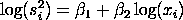
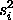
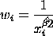

|
2.
Measurement Process Characterization
2.6. Case studies 2.6.5. Uncertainty analysis for extinguishing fire 2.6.5.2. Create a calibration curve for the rotameter/a>
|
|||
| Weights Proportional to the Variance |
We can use
weighting
to improve the fit where the weights are proportional to
the variance. The weights are estimated using the
power
function. That is, we fit
  are the variances from each set of replicates in the data. We then calculate the weights as |
||
| Plot of the Power Function |
The following is the plot of the power function
with the corresponding linear fit for this
data set.
Note that for this data, the plot is dominated by the flux=90 group. Also, the plot does not demonstrate a clear linear pattern. Instead, the variances are basically flat for the first five values, and then there is a rise for the last three values. Based on this plot, it is reasonable to conclude that weighting the fit with this method may do more harm than good. |
||